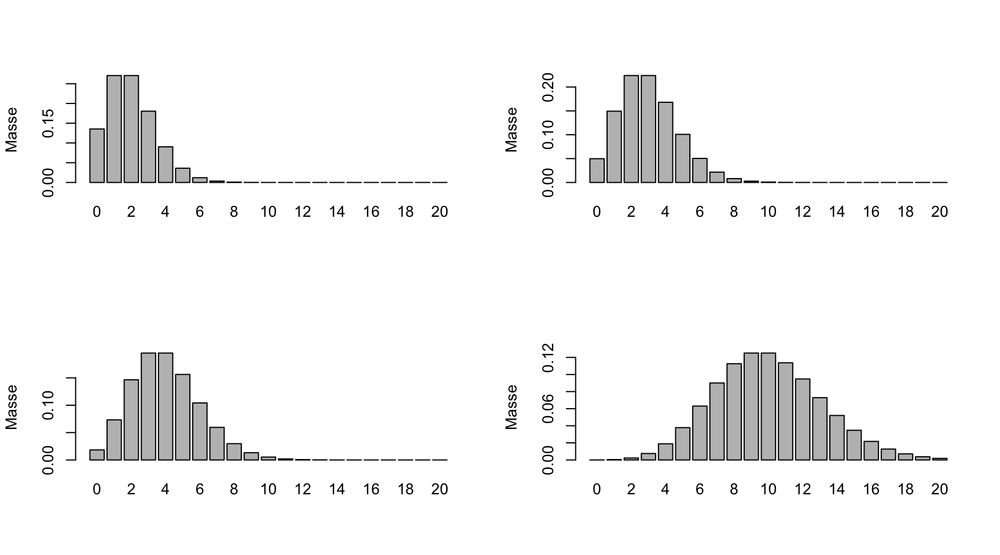
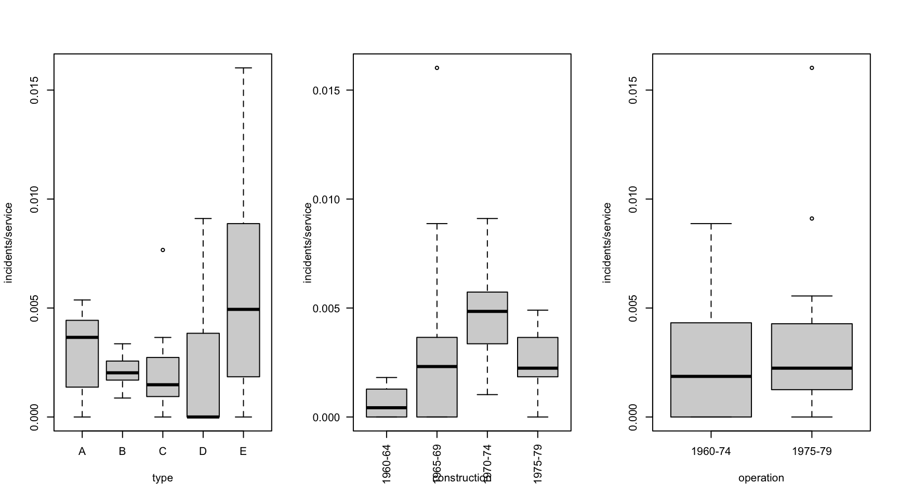
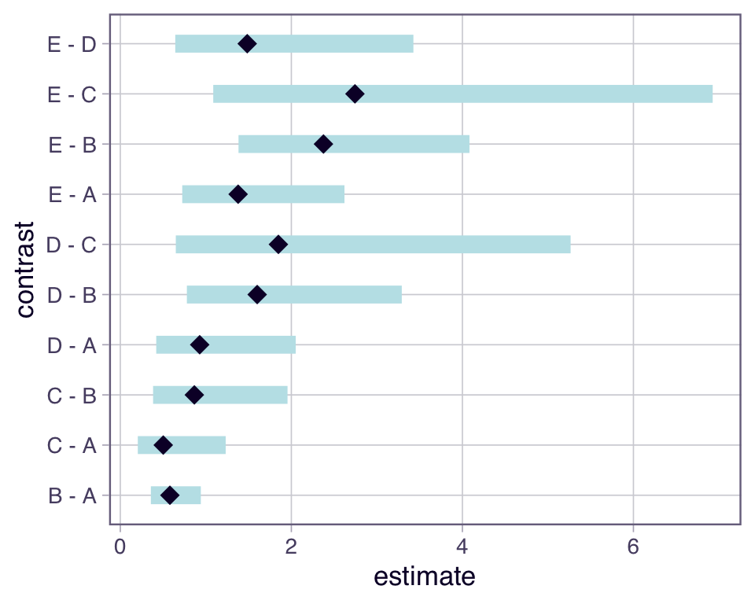
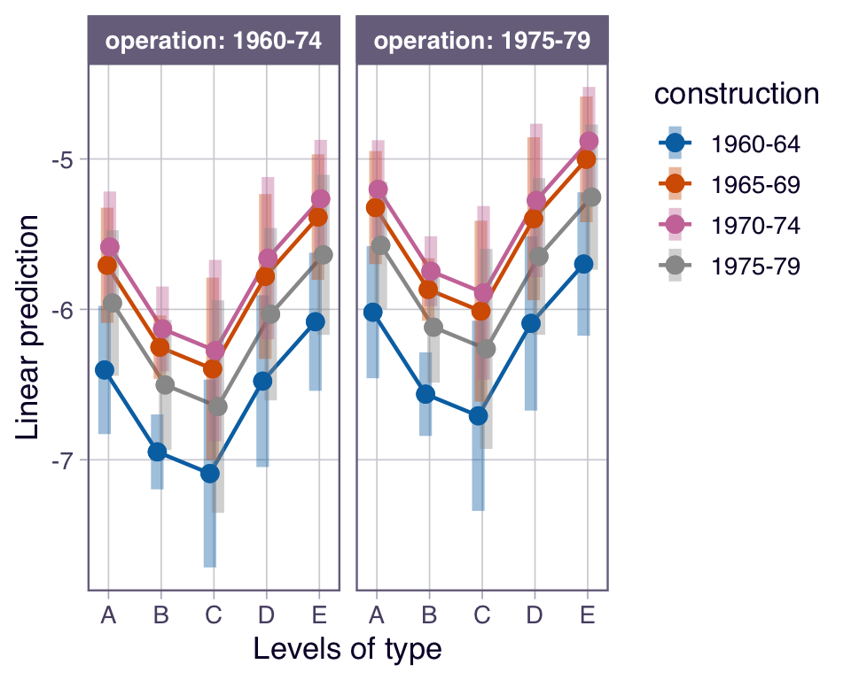
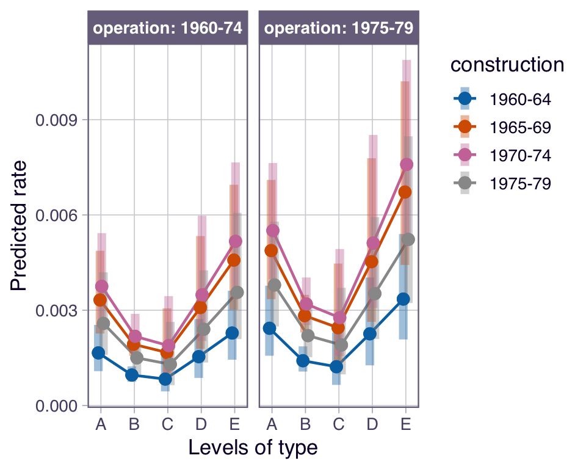

10 Poisson Regression
In Chapter 8 haben Sie erfahren, wie man auf Grundlage von 2x2 Tabellen Odds und Odds Ratios, bzw. Risiken und Risk Ratios berechnet. In Chapter 9 wurde erläutert, wie man Odds und Wahrscheinlichkeiten mit einem Regressionsansatz modellieren kann.
Weil die abhängige Variable \(Y_i\) eine binäre Variable mit unterliegender Eintrittswahrscheinlichkeit \(\pi_i\) (oder Anzahl Erfolge bei gruppierten Daten) war, verwendeten wir dafür die Binomialverteilung \(Y_i\sim \mathcal{B}(1,\pi_i)\), zusätzlich zum linearen Prädiktor
\[ \mathrm{logit}(\pi_i) = \beta_0 + \beta_1x_{i1}+\dots+\beta_m x_{im}. \]
Die Link-Funktion, die ermöglicht, dass der transformierte Erwartungswert und damit der lineare Prädiktor nicht mehr beschränkt ist, war dort die \(\mathrm{logit}\)-Funktion.
In diesem Kapitel geht es nun darum, wie man Anzahlen oder Raten mit einem Regressionsansatz modelliert. In der Epidemiologie beschreibt eine Rate die Anzahl Events pro Personenjahr, z.B. die Anzahl neuer Krebsfälle pro 1000 Personenjahre. Anzahlen können nur ganzzahlige Werte annehmen. Für solche Zähldaten (= diskrete Variablen) wird oft eine Poissonverteilung angenommen, dies führt dann zur Poisson Regression. Diese findet also dann Anwendung, wenn die abhängige Variable die Anzahl von Ereignissen in einem festen Zeitraum (oder Raum) darstellt.
In diesem Kapitel werden wir die Grundlagen der Poisson-Regression erkunden. Die Flexibilität dieser Modelle wird aufgezeigt, in dem mehrere Prädiktoren in ein Modell eingeschlossen werden. Der Fokus liegt auf der Anwendung (selbstständige Anpassung der Modelle in R) und der Interpretation. Mathematische Details werden soweit reduziert, wie möglich.
10.1 Notation
- \(\mu\): erwartete Anzahl
- \(T\): Beobachtungszeit (z.B. Personenjahre)
- \(\lambda\): erwartete Rate
- \(RR\): Rate Ratio, \(IRR\): Incidence Rate Ratio
- \(\mathcal{P}(\mu)\): Poisson-Verteilung mit Parameter \(\mu\)
- \(\mathcal{B}(n,\pi)\): Binomialverteilung mit Parametern \(n\) und \(\pi\)
- \(\mathcal{N}(\mu,\sigma^2)\): Normalverteilung mit Parametern \(\mu\) und \(\sigma^2\)
- \(D\): Devianz
10.2 Lernziele
Beachten Sie im Folgenden die überaus wichtigen Rechenregeln bezüglich der \(\log\) und \(\exp\)-Funktion. Sie werden uns auf Schritt und Tritt verfolgen:
\[ \begin{aligned} \log(a \times b) &= \log(a) + \log(b)\\ \log(a /b) &= \log(a) - \log(b)\\ \exp(a + b) &= \exp(a) \times \exp(b)\\ \quad \exp(a-b) &= \exp(a)/\exp(b) \end{aligned} \]
Important
Definieren Sie eine erwartete Anzahl Ereignisse für eine statistische Einheit \(i\) als
\[ \mu_i = \lambda_i T_i, \]
wobei \(\lambda_i\) die Rate und \(T_i\) die totale Beobachtungszeit dieser Einheit darstellt.
Wenden Sie eine Poisson Regression an, wenn anhand einer oder mehrerer Prädiktorvariablen die Rate \(\lambda_i\) oder die Anzahl (Count) \(\mu_i\) eines Ereignisses für eine Beobachtungsdauer \(T_i\) geschätzt werden soll.
Modell für Anzahlen (counts): Der lineare Prädiktor ist gegeben durch den log-transformierten Erwartungswert \(\mu_i\),
\[ \boxed{\log(\mu_i) = \beta_0 + \beta_1x_{i1}+...+\beta_mx_{im},} \]
und die Anzahlen \(Y_i\) gehorchen einer Poissonverteilung mit Parameter \(\mu_i\),
\[ \boxed{Y_i\sim \mathcal {P}(\mu_i).} \]
Die Poissonverteilung \(\mathcal{P}(\mu)\) hat einen Parameter \(\mu\). Beachten Sie, dass für die Poisson-Verteilung Mittelwert und Varianz gleich dem Parameter \(\mu\) sind: \(E(Y_i)=\mathrm{Var}(Y_i)=\mu_i\).
Modell mit Offset: Mit einem Offset-Term für die Beobachtungszeit \(T_i\) haben wir für den linearen Prädiktor
\[ \log(\mu_i) = \underbrace{\log(T_i)}_{\text{offset}}+\beta_0 + \beta_1x_{i1}+...+\beta_mx_{im}, \]
das ist äquivalent mit
\[ \boxed{\log(\lambda_i) = \beta_0 + \beta_1x_{i1}+...+\beta_mx_{im}.} \]
Beachten Sie, dass eine Anzahl und eine Rate im Intervall [0, \(\infty\)) liegt, die \(\log(\mu)\), bzw. \(\log(\lambda)\) im Intervall (\(-\infty\); \(\infty\)).
Berechnen Sie \(\log(\hat{\lambda}_i)\) (oder \(\log(\hat{\mu}_i)\)) durch Einsetzen der geschätzten Regressionskoeffizienten \(\hat{\beta}_k (k=0,\dots,m)\) sowie der Werte für die Prädiktoren der Einheit \(i\) in die Regressionsgleichung.
Interpretieren Sie \(\beta_0\) (intercept) als die log count oder log rate, wenn alle unabhängigen Variablen den Wert 0 annehmen (und kategorielle Eingangsgrössen auf der Referenzkategorie sind). Diese Grösse ist meistens nicht von Interesse.
Interpretieren Sie die Effekte oder Steigungen \(\beta_k\) (\(k=1,\dots,m\)) bezüglich einer Eingangsgrösse \(x_k\) als log Count Ratio oder log Rate Ratio,
\[ \begin{aligned} \log(RR)=&\log(\mu_{x_k=a})-\log(\mu_{x_k=a-1}),\\ \log(RR)=&\log(\lambda_{x_k=a})-\log(\lambda_{x_k=a-1}), \end{aligned} \] als den Unterschied der Rate (Anzahl) auf \(\log\)-Skala für zwei Subpopulationen, die sich auf \(x_k\) um eine Einheit unterscheiden, während die anderen unabhängigen Variablen konstant gehalten werden. Die Nullhypothesen sind dann meistens
\[ H_0: \beta_k = 0, \quad k=1,...,m. \]
Exponieren Sie \(\log(RR)\), um entsprechende Rate Ratios zu interpretieren.
Beachten Sie, dass dass eine Rate Ratio im Intervall [0, \(\infty\)) liegt, die \(\log(RR))\) im Intervall (\(-\infty\); \(\infty\)), also nicht beschränkt ist.
Führen Sie eine Poisson Regression in
Rmitglm()durch und interpretiere die geschätzten Regressionskoeffizienten sowie deren inferenzstatistischen Angaben.Beachten Sie, dass man im Falle der Poisson Regression mit der Maximimum-Likelihood Methode Likelihood Parameter geschätzt werden.
Sie können zwei verschachtelte (nested) Poisson Regressionsmodelle in
Rmit einem Likelihood Ratio Test vergleichen, wobei die Nullhypothese der Aussage entspricht: \(H_0\): Das reduzierte Modell ist richtig.
10.3 Anzahlen und Raten
Eine erwartete Rate \(\lambda_i\) für eine Einheit \(i\) beschreibt die erwartete Anzahl Ereignisse \(\mu_i\) pro totale Beobachtungszeit \(T_i\), da
\[ \mu_i = \lambda_i \times T_i. \]
Ein Beispiel dafür sind die Anzahl Stürze während einem halben Jahr. Dann wären alle \(T_i\) identisch. In Studien wird die Beobachtungszeit häufig auf 100, 1000 oder sogar 100’000 Personenjahre normiert, je nachdem, wie oft ein Ereignis auftritt. Weil die Zeit ein fester Bestandteil der Formel ist, können Raten nur berechnet werden, wenn longitudinale Daten vorliegen. Diese stammen in der Regel aus:
Kohortenstudien
Interventionsstudien
Weil für die Berechnung von \(\lambda\) die Anzahl der Ereignisse \(\mu\) durch Personenjahre \(T\) geteilt wird, kann man eine Rate auch dann berechnen, wenn die Beobachtungszeit nicht für alle Personen gleich ist. Wie wir technisch damit umgehen, sehen Sie weiter unten.
Beispiel: 100 Personen, welche zu Beginn der Studie älter als 70 Jahre alt waren, wurden über einen Zeitraum von einem halben Jahr beobachtet und die Anzahl Stürze wurde gemessen. Insgesamt betrug die Beobachtungszeit 42 Personenjahre (einige haben die Studie abgebrochen). Es wurden 18 Stürze gemessen, somit ist \(\hat{\lambda} =\frac{\hat{\mu}}{T}= \frac{18}{42} = 0.43\) Stürze pro Personenjahr, bzw. 43 Stürze pro 100 Personenjahre.
In der Poisson-Regression gehen wir davon aus, dass die Anzahl Ereignisse eine diskrete Variable \(Y_i\) ist und einer Poissonverteilung mit Parameter \(\mu_i\) folgt.
Wir notieren kurz
\[ Y_i\sim \mathcal{P}(\mu_i), \]
wenn die \(Y_i\) Poisson-verteilt sind gemäss
\[ p(y)=\frac{\mu^y}{y!}\exp(-\mu),\quad y=0,1,2,\dots . \]
Diese Verteilung ist in R implementiert in dpois().
Für die Poissonverteilung gilt, dass Erwartungswert und Varianz identisch sind, nämlich gleich dem Parameter \(\mu\).
\[ \mathbb{E}(Y)=\mathrm{Var}(Y)=\mu. \]
Das heisst, die Varianz wächst mit dem Erwartungswert, im Gegensatz zur Normalverteilung, dort ist \(\sigma^2\) unabhängig vom Erwartungswert.
X<-rpois(n=10000,lambda=4);c(mean=mean(X),var=var(X)) mean var
3.977300 3.945379 X<-rpois(n=10000,lambda=8);c(mean=mean(X),var=var(X)) mean var
8.000600 7.954395 Bei Poisson-Daten führt ein grösserer Mittelwert automatisch zu grösserer Streuung. Beim Anpassen von Modellen werden wir also später das Argument family = poisson festlegen müssen. Bei der logistischen Regression war die Einstellung family = binomial.
10.4 Rückblick
In der linearen Regression mit kontinuierlicher abhängiger Variable war das Modell \(Y_i=\beta_0 + \beta_1x_{i1}+\dots+\beta_mx_{im}+\epsilon_i\) mit \(\epsilon_i \sim \mathcal{N}(0,\sigma^2)\), kurz:
NoteLineare Regression
\[ \mu_i=\beta_0 + \beta_1x_{i1}+\dots+\beta_mx_{im}, \qquad Y_i\sim \mathcal{N}(\mu_i,\sigma^2) \]
In der linearen Regression musste der Erwartungswert \(\mu_i\) nicht transformiert werden.
In der logistischen Regression brauchten wir die logit (=logOdds)-Funktion für die Transformation des Erwartungwerts \(\pi_i\). Der lineare Prädiktor und die Verteilung waren
NoteLogistische Regression
\[ \mathrm{logit}(\pi_i)=\beta_0 + \beta_1x_{i1}+\dots+\beta_mx_{im}, \qquad Y_i\sim \mathcal{B}(\pi_i,1) \]
Bei aggregierten Daten haben wir statt der Bernoulli \(\mathcal{B}(\pi_i,1)\) allgemein eine Binomialverteilung \(\mathcal{B}(\pi_i,n)\). Mit der logit-Funktion \(\log(Odds)\) konnten wir den Erwartungswert (eine Wahrscheinlichkeit) auf die ganze reelle Zahlenachse \([-\infty,+\infty]\) abbilden. Wir nennen den mit der Link-Funktion transformierten Erwartungswert den linearen Prädiktor. Mit der logistischen Funktion kam man zurück zum Erwartungswert,
\[ \pi_i=\frac{\exp(\beta_0+\beta_1x_{i1}+\dots+\beta_mx_{im})}{1+\exp(\beta_0+\beta_1x_{i1}+\dots+\beta_mx_{im})}. \]
Wenn wir für den linearen Prädiktor \(\exp(\beta_0+\beta_1x_{i1}+\dots+\beta_mx_{im})\) kurz \(\eta_i\) schreiben, haben wir kürzer
\[ \pi_i=\frac{\exp(\eta_i)}{1+\exp(\eta_i)}. \]
10.5 Poisson Regression
Jetzt zur Poisson-Regression: Nun sind erwartete Anzahlen oder Raten (Anzahlen pro Personenjahr) positive Zahlen. Die \(\log\)-Funktion bildet positive Zahlen auf \((-\infty,+\infty)\) ab. In der Poisson-Regression wird daher für die Transformation des Erwartungswertes \(\mu\) die \(\log\)-Funktion gebraucht. Das Modell (linearer Prädiktor und Verteilung) ist dann
ImportantLinearer Prädiktor und Verteilung
\[ \log(\mu_i)=\beta_0 + \beta_1x_{i1}+\dots+\beta_mx_{im}, \qquad Y_i\sim \mathcal{P}(\mu_i) \]
ImportantErwartungswert
\[ \mu_i=\exp(\beta_0 +\beta_1x_{i1}+\dots+\beta_mx_{im})=\exp(\beta_0)\exp(\beta_1x_{i1})\dots\exp(\beta_mx_{im}). \]
Schätzen der Parameter: Da wir die wahren \(\beta\)’s nicht kennen, schätzen wir diese wie immer anhand von Stichprobendaten. Das macht glm() für uns mit der Maximum-Likelihood-Methode, wir haben dann
\[ \log(\hat{\mu}_i) = \hat{\beta}_0 + \hat{\beta}_1x_{i1}+\dots+\hat{\beta}_mx_{im} \]
und folglich
\[ \hat{\mu}_i= \exp(\hat{\beta}_0 + \hat{\beta}_1x_{i1}+\dots+\hat{\beta}_mx_{im}) \]
Um Raten anzupassen, brauchen wir die Beobachtungszeit pro Einheit \(T_i\) als Variable im Datensatz. Diese Zeit kann in z.B. Tagen, Monaten oder Jahren vorliegen. Manchmal liegen auch nur Start- und Enddatum der Beobachtungszeit vor, man muss dann die Beobachtungszeit zuerst berechnen.
Wir schreiben dann den linearen Prädiktor
\[ \log(\mu_i)=\beta_0 + \beta_1x_{i1}+\dots+\beta_mx_{im}+\log(T_i), \] oder kurz
\[ \log(\lambda_i)=\log(\mu_i/T_i)=\beta_0 + \beta_1x_{i1}+\dots+\beta_mx_{im}. \]
Der letzte Term heisst offset und ist definiert als eine Eingangsgrösse ohne zu schätzenden Parameter (dieser ist fixiert auf 1).
NoteOffset-Term versus Rate als abhängige Variable
Achtung: Die \(Y_i\) sind immer noch \(\mathcal{P}(\mu_i)\), nicht \(\mathcal{P}(\lambda_i)\). Man darf also nicht direkt \(Y_i/T_i\) modellieren, das wäre keine Poisson-Regression mehr.
10.6 Beispiel
Wir betrachten folgende Daten: 34 Beobachtungen zu 5 Schiffstypen in 4 Baujahren und 2 Betriebsperioden:
typeEin Faktor mit den Levels „A“ bis „E“ für die verschiedenen Schiffstypen.constructionEin Faktor mit den Levels „1960-64“, „1965-69“, „1970-74“, „1975-79“ für die Bauperioden.operationEin Faktor mit den Levels „1960-74“, „1975-79“ für die Betriebsperioden.serviceDie aggregierten Betriebsmonate.incidentsDie Anzahl der Schadensvorfälle.
library(AER)
data("ShipAccidents")
df.sa <- subset(ShipAccidents, service > 0)##ohne die Fälle, die nie in Betrieb warenstr() ist immer sinnvoll, bevor wir mit Daten arbeiten, ebenso die Betrachtung von ein paar Zeilen des Datensatzes:
str(df.sa)'data.frame': 34 obs. of 5 variables:
$ type : Factor w/ 5 levels "A","B","C","D",..: 1 1 1 1 1 1 1 2 2 2 ...
$ construction: Factor w/ 4 levels "1960-64","1965-69",..: 1 1 2 2 3 3 4 1 1 2 ...
$ operation : Factor w/ 2 levels "1960-74","1975-79": 1 2 1 2 1 2 2 1 2 1 ...
$ service : num 127 63 1095 1095 1512 ...
$ incidents : num 0 0 3 4 6 18 11 39 29 58 ...psych::headTail(df.sa) type construction operation service incidents
1 A 1960-64 1960-74 127 0
2 A 1960-64 1975-79 63 0
3 A 1965-69 1960-74 1095 3
4 A 1965-69 1975-79 1095 4
... <NA> <NA> <NA> ... ...
36 E 1965-69 1975-79 437 7
37 E 1970-74 1960-74 1157 5
38 E 1970-74 1975-79 2161 12
40 E 1975-79 1975-79 542 1Hier wäre incidents die abhängige ganzzahlige Variable, type, construction und operation unabhängige Variablen, alles kategorielle Variablen, service die Zeit in Monaten, während der die Ereignisse gezählt werden. Es scheint offensichtlich, dass service berücksichtigt werden muss.
10.6.1 Deskriptive Statistik
summary(df.sa) type construction operation service incidents
A:7 1960-64: 8 1960-74:14 Min. : 45 Min. : 0.00
B:7 1965-69:10 1975-79:20 1st Qu.: 371 1st Qu.: 1.00
C:7 1970-74:10 Median : 1095 Median : 4.00
D:7 1975-79: 6 Mean : 4811 Mean :10.47
E:6 3rd Qu.: 2223 3rd Qu.:11.75
Max. :44882 Max. :58.00 par(mfrow=c(1,3))
with(df.sa, plot(incidents/service ~ type))
with(df.sa, plot(incidents/service ~ construction,las=2))
with(df.sa, plot(incidents/service ~ operation))
10.7 Nicht-reduziertes Modell
Da die Anzahlen incidents nur in Bezug zu den Betriebsmonaten service Sinn machen, integrieren wir einen Offset Term. Wir passen zuerst direkt ein multiples Modell an mit type, construction und operation als Eingangsgrössen.
Das family-Argument ist jetzt poisson mit \(\log\)-Link. Der \(\log\)-Link ist der Default-Link bei Poisson Daten (so wie es der \(\mathrm{logit}\)-Link bei der logistischen Regression war). Das offset-Argument ist log(service) (mit \(\log\)!).
Die Syntax ist dann:
m.pois.large <- glm(incidents ~ type + construction + operation +offset(log(service)),
family = poisson(link="log"),data = df.sa)Schauen wir uns das angepasste Modell an:
summary(m.pois.large)
Call:
glm(formula = incidents ~ type + construction + operation + offset(log(service)),
family = poisson(link = "log"), data = df.sa)
Coefficients:
Estimate Std. Error z value Pr(>|z|)
(Intercept) -6.40288 0.21752 -29.435 < 2e-16 ***
typeB -0.54471 0.17761 -3.067 0.00216 **
typeC -0.68876 0.32903 -2.093 0.03632 *
typeD -0.07431 0.29056 -0.256 0.79815
typeE 0.32053 0.23575 1.360 0.17396
construction1965-69 0.69585 0.14966 4.650 3.33e-06 ***
construction1970-74 0.81746 0.16984 4.813 1.49e-06 ***
construction1975-79 0.44497 0.23324 1.908 0.05642 .
operation1975-79 0.38386 0.11826 3.246 0.00117 **
---
Signif. codes: 0 '***' 0.001 '**' 0.01 '*' 0.05 '.' 0.1 ' ' 1
(Dispersion parameter for poisson family taken to be 1)
Null deviance: 146.328 on 33 degrees of freedom
Residual deviance: 38.963 on 25 degrees of freedom
AIC: 154.83
Number of Fisher Scoring iterations: 5Eine kategorielle Eingangsgrösse mit \(k\) Stufen fliesst mit \(k-1\) Parametern in ein Modell ein, wobei in der R-Effekt-Parameterisierung der Parameterwert der Referenzkategorie immer Null gesetzt wird. Also hat unser Modell \(p=1+(5-1)+(4-1)+(2-1)= 9\) Parameter.
Die Residualdevianz ist gleich
\[ D_R=-2(l(\mathbf{\hat\beta})-l_{max})=38.9626202 \] mit \(l_{max}\) als der log-likelihood des maximalen Modells (ein Modell mit einem Parameter für jede Beobachtung \(i\), also der bestmögliche Fit) und \(l(\mathbf{\hat\beta})\) als der log-likelihood vom MLE.
Die Null Deviance ist \(D_0=-2(l_0-l_{max})=146.3283365\) mit \(l_0\) als der log-likelihood für das Null model (Ein Modell nur mit dem Intercept).
Der Unterschied in der Anzahl Parametern zwischen dem maximalen Modell und diesem Modell ist \(n-9=34-9=25\).
10.8 Reduzierte Modelle
Mit drop1 können wir für verschiedene Eingangsgrössen testen, ob sie aus dem Modell entfernt werden können.
drop1(m.pois.large,test="Chisq")Single term deletions
Model:
incidents ~ type + construction + operation + offset(log(service))
Df Deviance AIC LRT Pr(>Chi)
<none> 38.963 154.83
type 4 62.536 170.40 23.573 9.725e-05 ***
construction 3 70.364 180.23 31.401 6.998e-07 ***
operation 1 49.591 163.46 10.628 0.001114 **
---
Signif. codes: 0 '***' 0.001 '**' 0.01 '*' 0.05 '.' 0.1 ' ' 1Diese Funktion macht z.B. bezüglich operation folgenden Modellvergleich:
m.pois.noop<-update(m.pois.large,.~.-operation)
anova(m.pois.noop,m.pois.large)Analysis of Deviance Table
Model 1: incidents ~ type + construction + offset(log(service))
Model 2: incidents ~ type + construction + operation + offset(log(service))
Resid. Df Resid. Dev Df Deviance Pr(>Chi)
1 26 49.591
2 25 38.963 1 10.628 0.001114 **
---
Signif. codes: 0 '***' 0.001 '**' 0.01 '*' 0.05 '.' 0.1 ' ' 1Wiederholen wir diesen Modellvergleich von Hand. Der Unterschied in Devianz zwischen dem reduzierten (\(H_0\)-Modell, “small”) und dem geschätzten vollen Modell (“large”)
\[ \begin{aligned} D_{small}-D_{large}&=-2(l_{small}-l_{saturated})-(-2(l_{large}-l_{saturated}))\\ &=-2(l_{small}-l_{large}) \end{aligned} \]
ist, wie wir schon gesehen haben \(\chi^2\)-verteilt ist mit \(p_{large}-p_{small}\) Freiheitsgraden.
(dl<-deviance(m.pois.large)) #deviance large model[1] 38.96262(ds<-deviance(m.pois.noop)) #deviance reduced model[1] 49.59105(LR<-ds-dl) #Likelihood Ratio statistik[1] 10.628431-pchisq(LR,1) #p-value[1] 0.001113619Wir können die Nullhypothese, dass das reduzierte Modell wahr ist, verwerfen. Das gleiche gilt für die anderen Modellvergleiche. Wir bleiben daher beim nicht reduzierten Modell und können nun die Parameter interpretieren.
Die Schätzungen sind (ausser das Intercept) als log Rate Ratio zu interpretieren. Diesbezügliche Likelihood-Konfidenzintervalle bekämen wir wieder mit
confint(m.pois.large)Eine Darstellung des angepassten Modells mit Likelihood-Konfidenzintervallen und Wald Tests bekommen wir wieder mit parameters() aus dem gleichnamigen Packet:
parameters::parameters(m.pois.large,digits=3)Parameter | Log-Mean | SE | 95% CI | z | p
-------------------------------------------------------------------------------
(Intercept) | -6.403 | 0.218 | [-6.840, -5.986] | -29.435 | < .001
type [B] | -0.545 | 0.178 | [-0.883, -0.185] | -3.067 | 0.002
type [C] | -0.689 | 0.329 | [-1.378, -0.076] | -2.093 | 0.036
type [D] | -0.074 | 0.291 | [-0.670, 0.477] | -0.256 | 0.798
type [E] | 0.321 | 0.236 | [-0.148, 0.780] | 1.360 | 0.174
construction [1965-69] | 0.696 | 0.150 | [ 0.406, 0.994] | 4.650 | < .001
construction [1970-74] | 0.817 | 0.170 | [ 0.486, 1.153] | 4.813 | < .001
construction [1975-79] | 0.445 | 0.233 | [-0.021, 0.896] | 1.908 | 0.056
operation [1975-79] | 0.384 | 0.118 | [ 0.153, 0.617] | 3.246 | 0.001 Das Intercept \(\hat{\beta}_0\) ist die geschätzte log Rate, wenn alle Eingangsgrössen auf der Referenzkategorie sind. Das können wir mit predict() nachvollziehen, müssen dort aber für service=1 setzen, damit log(service)=0.
predict(m.pois.large,
newdata=data.frame(type="A",construction="1960-64",operation="1960-74",service=1)) 1
-6.402877 Der geschätzte Parameter type[B] ist der Unterschied in \(\log\)-Rate relativ zu type[A], wenn man die anderen Eingangsgrössen konstant hält, usw.
Mit Exponieren kommen wir zu den Rate Ratios (oder auch Incidence Rate Ratios), Negative \(\log\)-Raten werden zu Rate Ratios kleiner 1, positive \(\log\)-Rate werden zu Rate Ratios grösser als 1:
parameters::parameters(m.pois.large,digits=3,exponentiate=TRUE)Parameter | IRR | SE | 95% CI | z | p
------------------------------------------------------------------------------
(Intercept) | 0.002 | 3.604e-04 | [0.001, 0.003] | -29.435 | < .001
type [B] | 0.580 | 0.103 | [0.414, 0.831] | -3.067 | 0.002
type [C] | 0.502 | 0.165 | [0.252, 0.927] | -2.093 | 0.036
type [D] | 0.928 | 0.270 | [0.512, 1.611] | -0.256 | 0.798
type [E] | 1.378 | 0.325 | [0.862, 2.181] | 1.360 | 0.174
construction [1965-69] | 2.005 | 0.300 | [1.501, 2.702] | 4.650 | < .001
construction [1970-74] | 2.265 | 0.385 | [1.626, 3.167] | 4.813 | < .001
construction [1975-79] | 1.560 | 0.364 | [0.979, 2.449] | 1.908 | 0.056
operation [1975-79] | 1.468 | 0.174 | [1.165, 1.853] | 3.246 | 0.001 \(IRR\) steht hier für Incidence Rate Ratio. So hat z.B. type[C] die Hälfte der Ereignisrate von type[A] mit einer geschätzten Rate Ratio von 0.5021962 mit einem 95% KI, dass den Nulleffekt 1 nicht überdeckt und somit haben wir auch \(P<0.05\).
10.9 Kontraste
Bei kategoriellen Eingangsgrössen haben wir in der R-Effektparameterisierung immer die Effekte relativ zur Referenzkategorie. Oft interessieren aber auch andere Effekte, die nicht direkt in der Default-Parameterisierung ersichtlich sind.
Kontraste sind Linearkombinationen von Parametern mit der Bedingung, dass die Summe der Koeffizienten Null ist. Mit Konstanten \(a_1,a_2,\dots,a_t\) und Parametern \(\theta_1,\theta_2,\dots,\theta_t\) ist ein Kontrast
\[ L=\sum_{i=1}^ta_i\theta_i, \qquad \mathrm{mit} \sum_{i=1}^ta_i=0. \]
Beispiel: So wäre für obiges Modell der Kontrast mit \(a_1=0,a_2=0,a_3=0,a_4=-1,a_5=1,a_6=0,a_7=0,a_8=0,a_9=0\) der Abstand in \(\log\)-Rate oder Rate Ratio zwischen type[E] und type[D], also der Effekt \(\beta_5-\beta_4\). Der entsprechende Schätzwert ist 0.3948379.
Kontraste werden konstruiert, um spezifische Forschungsfragen zu beantworten. Das ist implementiert in emmeans() aus dem gleichnamigen Packet (Estimated marginal means). Wir bekommen dann z.B. alle paarweisen Kontraste bezüglich type mit Punktschätzung, Standardfehler, Intervallschätzung, \(z\)-Statistik und \(p\)-Werten mit
library(emmeans)
emmeans(m.pois.large,revpairwise~type,infer=TRUE,offset=0)$emmeans
type emmean SE df asymp.LCL asymp.UCL z.ratio p.value
A -5.72 0.1620 Inf -6.04 -5.40 -35.221 <0.0001
B -6.27 0.0758 Inf -6.41 -6.12 -82.662 <0.0001
C -6.41 0.2940 Inf -6.99 -5.83 -21.825 <0.0001
D -5.80 0.2490 Inf -6.28 -5.31 -23.306 <0.0001
E -5.40 0.1880 Inf -5.77 -5.03 -28.803 <0.0001
Results are averaged over the levels of: construction, operation
Results are given on the log (not the response) scale.
Confidence level used: 0.95
$contrasts
contrast estimate SE df asymp.LCL asymp.UCL z.ratio p.value
B - A -0.5447 0.178 Inf -1.0292 -0.0602 -3.067 0.0184
C - A -0.6888 0.329 Inf -1.5863 0.2088 -2.093 0.2229
C - B -0.1441 0.299 Inf -0.9587 0.6706 -0.482 0.9890
D - A -0.0743 0.291 Inf -0.8669 0.7183 -0.256 0.9991
D - B 0.4704 0.264 Inf -0.2505 1.1913 1.780 0.3853
D - C 0.6145 0.384 Inf -0.4323 1.6612 1.601 0.4965
E - A 0.3205 0.236 Inf -0.3225 0.9636 1.360 0.6536
E - B 0.8652 0.199 Inf 0.3237 1.4068 4.358 0.0001
E - C 1.0093 0.339 Inf 0.0832 1.9354 2.973 0.0246
E - D 0.3948 0.307 Inf -0.4420 1.2317 1.287 0.6993
Results are averaged over the levels of: construction, operation
Results are given on the log (not the response) scale.
Confidence level used: 0.95
Conf-level adjustment: tukey method for comparing a family of 5 estimates
P value adjustment: tukey method for comparing a family of 5 estimates Damit wir für die emmeans’s Raten haben statt Anzahlen, müssen wir offset=0 schreiben. Wenn wir Rate Ratios wollen, setzen wir das Argument type="response"
emmeans(m.pois.large,revpairwise~type,type="response",infer=TRUE,offset=0)$emmeans
type rate SE df asymp.LCL asymp.UCL null z.ratio p.value
A 0.00328 0.000532 Inf 0.002382 0.00450 1 -35.221 <0.0001
B 0.00190 0.000144 Inf 0.001637 0.00220 1 -82.662 <0.0001
C 0.00164 0.000483 Inf 0.000925 0.00292 1 -21.825 <0.0001
D 0.00304 0.000756 Inf 0.001868 0.00495 1 -23.306 <0.0001
E 0.00451 0.000846 Inf 0.003125 0.00652 1 -28.803 <0.0001
Results are averaged over the levels of: construction, operation
Confidence level used: 0.95
Intervals are back-transformed from the log scale
Tests are performed on the log scale
$contrasts
contrast ratio SE df asymp.LCL asymp.UCL null z.ratio p.value
B / A 0.580 0.103 Inf 0.357 0.942 1 -3.067 0.0184
C / A 0.502 0.165 Inf 0.205 1.232 1 -2.093 0.2229
C / B 0.866 0.259 Inf 0.383 1.955 1 -0.482 0.9890
D / A 0.928 0.270 Inf 0.420 2.051 1 -0.256 0.9991
D / B 1.601 0.423 Inf 0.778 3.291 1 1.780 0.3853
D / C 1.849 0.709 Inf 0.649 5.265 1 1.601 0.4965
E / A 1.378 0.325 Inf 0.724 2.621 1 1.360 0.6536
E / B 2.376 0.472 Inf 1.382 4.083 1 4.358 0.0001
E / C 2.744 0.931 Inf 1.087 6.927 1 2.973 0.0246
E / D 1.484 0.455 Inf 0.643 3.427 1 1.287 0.6993
Results are averaged over the levels of: construction, operation
Confidence level used: 0.95
Conf-level adjustment: tukey method for comparing a family of 5 estimates
Intervals are back-transformed from the log scale
P value adjustment: tukey method for comparing a family of 5 estimates
Tests are performed on the log scale Hier wird auch automatisch für Multiples Testen korrigiert (mit der Tukey-Methode).
mycontrasts<-emmeans(m.pois.large,revpairwise~type,type="response",infer=TRUE)
plot(mycontrasts$contrasts)
Hier sehen wir schön, welche Kontraste statistisch signifikant vom Nullwert verschieden sind, \(B-A\), \(E-C\) und \(E-B\).
10.10 Vorhersage
Wie in den letzten Kapiteln können wir für spezifische Werte der Eingangsgrössen der Einheit \(i\) und den geschätzten Parametern mit
\[ \log(\hat{\lambda}_i)=\hat{\beta}_0+\hat{\beta}_1x_{i1}+\dots+\hat{\beta}_mx_{im} \]
und dann mit
\[ \hat{\lambda}_i=\exp(\hat{\beta}_0+\hat{\beta}_1x_{i1}+\dots+\hat{\beta}_mx_{im}) \]
die Ereignisrate für Einheit \(i\) abschätzen. Das macht auch R für uns, mit emmeans::emmip()
emmip(m.pois.large,construction~type|operation,
offset=0,CIs=TRUE)
emmip(m.pois.large,construction~type|operation,type="response",
offset=0,CIs=TRUE)

oder tabellarisch
emmip(m.pois.large,construction~type|operation,type="response",
offset=0,CIs=TRUE,plotit=FALSE) construction type operation yvar SE df LCL UCL tvar
1960-64 A 1960-74 0.001657 0.000360 Inf 0.001082 0.00254 1960-64
1965-69 A 1960-74 0.003323 0.000649 Inf 0.002266 0.00487 1965-69
1970-74 A 1960-74 0.003752 0.000707 Inf 0.002594 0.00543 1970-74
1975-79 A 1960-74 0.002585 0.000638 Inf 0.001593 0.00419 1975-79
1960-64 A 1975-79 0.002432 0.000545 Inf 0.001568 0.00377 1960-64
1965-69 A 1975-79 0.004877 0.000935 Inf 0.003349 0.00710 1965-69
1970-74 A 1975-79 0.005508 0.000918 Inf 0.003974 0.00763 1970-74
1975-79 A 1975-79 0.003795 0.000818 Inf 0.002488 0.00579 1975-79
1960-64 B 1960-74 0.000961 0.000122 Inf 0.000749 0.00123 1960-64
1965-69 B 1960-74 0.001927 0.000207 Inf 0.001561 0.00238 1965-69
1970-74 B 1960-74 0.002176 0.000313 Inf 0.001641 0.00289 1970-74
1975-79 B 1960-74 0.001500 0.000331 Inf 0.000973 0.00231 1975-79
1960-64 B 1975-79 0.001411 0.000200 Inf 0.001069 0.00186 1960-64
1965-69 B 1975-79 0.002829 0.000300 Inf 0.002297 0.00348 1965-69
1970-74 B 1975-79 0.003195 0.000379 Inf 0.002532 0.00403 1970-74
1975-79 B 1975-79 0.002201 0.000414 Inf 0.001523 0.00318 1975-79
1960-64 C 1960-74 0.000832 0.000265 Inf 0.000446 0.00155 1960-64
1965-69 C 1960-74 0.001669 0.000516 Inf 0.000910 0.00306 1965-69
1970-74 C 1960-74 0.001884 0.000580 Inf 0.001031 0.00344 1970-74
1975-79 C 1960-74 0.001298 0.000468 Inf 0.000641 0.00263 1975-79
1960-64 C 1975-79 0.001221 0.000394 Inf 0.000649 0.00230 1960-64
1965-69 C 1975-79 0.002449 0.000752 Inf 0.001342 0.00447 1965-69
1970-74 C 1975-79 0.002766 0.000815 Inf 0.001553 0.00493 1970-74
1975-79 C 1975-79 0.001906 0.000647 Inf 0.000980 0.00371 1975-79
1960-64 D 1960-74 0.001538 0.000448 Inf 0.000869 0.00272 1960-64
1965-69 D 1960-74 0.003085 0.000862 Inf 0.001783 0.00534 1965-69
1970-74 D 1960-74 0.003483 0.000959 Inf 0.002031 0.00598 1970-74
1975-79 D 1960-74 0.002400 0.000702 Inf 0.001353 0.00426 1975-79
1960-64 D 1975-79 0.002258 0.000668 Inf 0.001265 0.00403 1960-64
1965-69 D 1975-79 0.004528 0.001250 Inf 0.002634 0.00778 1965-69
1970-74 D 1975-79 0.005113 0.001330 Inf 0.003070 0.00852 1970-74
1975-79 D 1975-79 0.003523 0.000937 Inf 0.002093 0.00593 1975-79
1960-64 E 1960-74 0.002283 0.000535 Inf 0.001442 0.00361 1960-64
1965-69 E 1960-74 0.004578 0.000975 Inf 0.003016 0.00695 1965-69
1970-74 E 1960-74 0.005170 0.001030 Inf 0.003493 0.00765 1970-74
1975-79 E 1960-74 0.003562 0.000968 Inf 0.002092 0.00607 1975-79
1960-64 E 1975-79 0.003351 0.000815 Inf 0.002080 0.00540 1960-64
1965-69 E 1975-79 0.006720 0.001430 Inf 0.004425 0.01021 1965-69
1970-74 E 1975-79 0.007589 0.001390 Inf 0.005294 0.01088 1970-74
1975-79 E 1975-79 0.005229 0.001290 Inf 0.003226 0.00848 1975-79
xvar
A
A
A
A
A
A
A
A
B
B
B
B
B
B
B
B
C
C
C
C
C
C
C
C
D
D
D
D
D
D
D
D
E
E
E
E
E
E
E
E
Confidence level used: 0.95
Intervals are back-transformed from the log scale 10.11 Übergrosse Streuung*
Oft ist die Poisson-Annahme \(\mathrm{Var}(Y_i)=\phi \mu_i\) mit \(\phi=1\) nicht erfüllt.
Die Residualdevianz (hier 38.9626202) folgt einer \(\chi^2\)-Verteilung mit \(n-p\) Freiheitsgraden (hier 25). Nun ist der Erwartungswert einer \(\chi^2\)-Verteilung gerade gleich dem Freiheitsgrad. Der Erwartungswert dieser Verteilung ist also \(\mathbb{E}(\chi^2_{n-p})=n-p=25\). Wenn also die Residualdevianz deutlich grösser als die Freiheitsgrade ist, haben wir Overdispersion oder übergrosse Streuung. Das war in unserem Modell oben nicht der Fall.
Man kann übergrosse Dispersion auch explizit testen, z.B. mit AER::dispersionstest(). Die Nullhypothese lautet “keine übergrosse Streuung”.
AER::dispersiontest(m.pois.large)
Overdispersion test
data: m.pois.large
z = 0.93429, p-value = 0.1751
alternative hypothesis: true dispersion is greater than 1
sample estimates:
dispersion
1.317918 Bei übergrosser Streuung wird manchmal ein Quasi-Poisson Modell angepasst. Der Skalenparameter \(\phi\) wird dann aus den Daten geschätzt und dann werden die Standardfehler mit \(\sqrt{\phi}\) multipliziert. Quasi-Modelle haben dann grössere Standardfehler, aber gleiche Punktschätzungen.
m.pois.largeQuasi <- glm(incidents ~ type + construction + operation +
offset(log(service)), family = quasipoisson,data = df.sa)
summary(m.pois.largeQuasi)$coef Estimate Std. Error t value Pr(>|t|)
(Intercept) -6.40287720 0.2834210 -22.5913965 3.752240e-18
typeB -0.54471145 0.2314212 -2.3537660 2.675092e-02
typeC -0.68876446 0.4287127 -1.6065873 1.207035e-01
typeD -0.07430914 0.3785819 -0.1962829 8.459756e-01
typeE 0.32052881 0.3071728 1.0434804 3.067117e-01
construction1965-69 0.69584550 0.1949944 3.5685415 1.486112e-03
construction1970-74 0.81745541 0.2212896 3.6940519 1.082115e-03
construction1975-79 0.44497065 0.3038986 1.4642077 1.555995e-01
operation1975-79 0.38385913 0.1540873 2.4911803 1.972968e-02Eine weitere Option für Zähldaten mit übergrosser Streuung ist das Negative-Binomial Modell, auf das wir hier nicht eingehen.